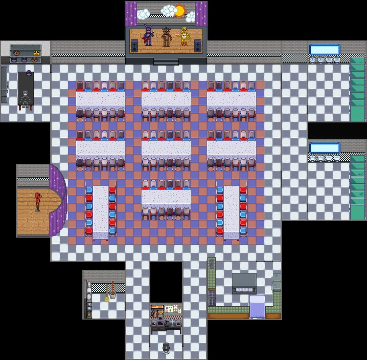
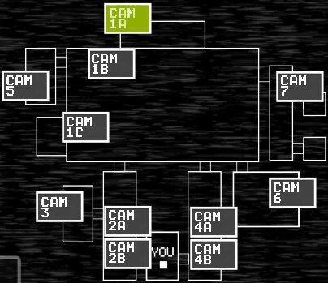
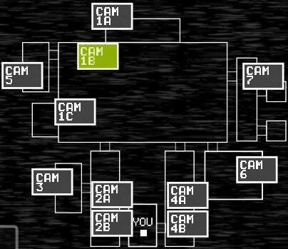

Карта-Передвижение
Примечение:В игре полностью отсуствует обучение управление и механике, только намеки Phone Guy(Телефоный парень)
так что в игре надо прислушиваться Phone Guy чтобы зацепками понять хоть что-то
Камеры
В игре 11 Камеры
они подзразделяються на обычные с цифрами и могут на A и B это лево и право
одна из них не показывает изображение а только аудио
- CAM1A — Сцена (стартовая локация), где находятся Bonny(Заяц),Chuca(Гусь) и Freddyfazbear(Медведь).
- CAM1B — главный зал, тут тусуются все три Аниматроника по передвижению.(кроме Foxy-Лисы).
- CAM5 — Мастерская, там также могут находиться Аниматроники.(кроме Freddyfazbear-Медведь.
- CAM1C — Пиратская Бухта (локация Foxy-Лисы), он тут один.
- CAM3 — Кладовка, Эту комнату посещает Bonny(Заяц).
- CAM2A — Коридор, начало. Через него бежит Foxy(Лиса) и там может стоять Bonny(Заяц).
- CAM2B — Коридор, конец, дальше Офис, На стенке может висеть плакат.
- CAM7 — Уборная, Комнату посещают такие аниматроники, как: Chuca(Гусь) и Freddyfazbear(Медведь).
- CAM6 — неактивная камера, только звук. По нему можно определять, есть кто или нет, там ходят Chuca(Гусь) и Freddyfazbear(Медведь)
- CAM4A — первая часть правого коридора по ней ходит Freddyfazbear(Медведь) и Chuca(Гусь)
- CAM4B — последняя часть коридора справа, по ней бродит Freddyfazbear(Медведь) и курица.
Сцена
CAM1A

Описание
Это Главная Сцена Аниматронив:Freddyfazbear(Медведь),Bonny(Заяц),Chuca(Гусь).
Это Сцена для выступление Аниматроников для Поситителей Freddy Fazbear's Pizza
Передвижение
Аниматроники в начале ночи Уходят со сцены для дальнейшего передвижение с Пиццерией к Игроку(Офису Охранику
Главный Зал
CAM 1B

Описание
В Главном Зале ходят 3 Аниматроника:Фредди,Бонни,Чика.
В Главном Зале празднуют Дети и Посетители пиццерий
Передвижение
С Сцены Аниматроники выходят в Главный Зал а от туда по своим направлением.
Внимательно следите за Фредди он стоит в темноте со святящимися глазами скрытно с первого взгляда его можно не заметить,
а Бонни и Чика ходят разными места в зависимости от близости к другим локациям.